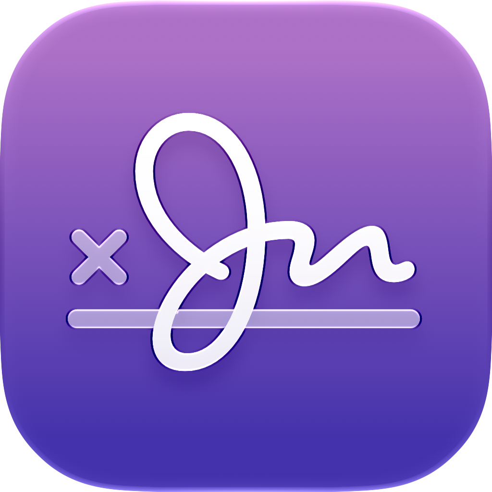

1.3.0 不是换皮肤，而是把保险库的底层换成了全新的 Storage Architecture v2： 文件怎么加密、钥匙怎么保管、导入怎么提交、旧库怎么搬迁、播放能不能写出明文——整条链路都重做了。
以前的 Crypta 也能加密，但结构和钥匙关系更「整包」。1.3.0 改成：每个保险箱一把主钥匙， 每个媒体文件再有自己的数据钥匙，目录名和缩略图也单独加密；钥匙本身还分「这台 Mac 能开」和「换电脑靠恢复密钥开」两套路径。
Movies/Crypta.vaultApplication Support/Crypta/Vault-v2/正式保险库存放在系统的「应用程序支持」目录里；给外部播放器用的临时明文，只住在缓存区，并且跟当前进程绑定。 目录权限默认只有你这个用户能访问。
几乎只有随机 ID、排序、数量、时间戳这类「不泄密」的字段。标题、时长、扩展名、缩略图等对你有意义的信息，都会先加密再写入。
打开外键约束，使用 WAL，并采用更严格的同步写盘策略，启动时还会做完整性检查，减少「写到一半断电」留下半残数据的风险。
正常释放租约、退出 App 都会删掉临时明文。启动时还会核对「是不是当初那个进程」——既看 PID，也看进程启动时间——避免误删、也避免漏删崩溃残留。
应用现在只把 Vault-v2 当作正式库。旧格式不会继续并行使用；打开旧库时会走一次性的安全迁移流程。
这样设计的好处是：即使某一层材料出了问题，也能尽量缩小影响面；同时也方便「这台电脑日常解锁」和「换机用恢复密钥」分开。
放在本机钥匙串里。主要用来保护保险箱名字，以及「标准保险箱」在本机的设备封装材料。它是整份目录的总入口之一。
每个保险箱各自一把随机 256 位主钥匙。它保护：该保险箱里的对象元数据、缩略图，以及下面那一层「文件数据钥匙」。
每个媒体对象再有自己的数据加密钥匙，由保险箱主钥匙「包」起来。真正的影音内容按块加密时用的就是它。
可打印、带校验的 256 位密钥。它能打开一份独立的「恢复信封」，里面装着保险箱主钥匙和目录钥匙——不依赖这台 Mac 的 Secure Enclave 是否还在。
恢复信封和本机设备封装是两套独立通路。钥匙串坏了、换 Mac、Secure Enclave 身份对不上，都可以用恢复密钥在本机重新接上。 Crypta 不会在云端替你存一份「能直接解开」的备份。
你需要记住的唯一「人话」规则：恢复密钥就是万一这台 Mac「认不出你」时的最后一把钥匙。Crypta 不会替你云备份它——保存好、离线放好。
不再把「一大包媒体」当成模糊整体。每个对象是一份带认证的容器：先认身份，再按块加密，还能边播边随机读。
头部标明格式、所属保险箱、对象 ID、修订号、明文长度、分块几何等信息，并且本身受认证保护，改一个字节都会露馅。
容器里有一把随机生成的「文件数据钥匙」，再用保险箱主钥匙把它包起来。真正加密影音内容时用的是数据钥匙。
媒体按大约 4MB 一块独立认证加密。内置播放器可以跳着读，不必整文件解密成明文文件。
随机数由「每个对象自己的前缀 + 块序号」推导；块认证还绑定头部、序号和精确明文长度。截断、追加、调换块、拼错对象，都会在读取时被发现。
1.3.0 把导入做成严格的「先写加密副本 → 校验 → 再记入目录 → 再考虑删原文件」顺序。任何一步失败，都优先保住你还能用的那份。
第一次打开旧版数据时，会进入本机「安全升级」。旧加密块只在迁移进程里解密，立刻流式写进新的 v2 容器——硬盘上不会先出现一整份明文电影再重新加密。
进度只记录阶段和汇总数量，不把标题等敏感信息写进进度文案。已有对象 ID 让「完成过的项」可以幂等跳过，不怕重复跑。
目标保险箱创建和首个进度检查点在同一 SQLite 事务里提交。中断后继续时，用已提交的设备封装即可，不必让恢复短语一直留在应用内存里。
旧缩略图在内存解密后，立刻用目标保险箱的钥匙重新加密写入，不在磁盘上晾明文预览图。
等所有预期对象都在、并且每个 v2 容器再次通过认证之后，只有在你明确要求清理时，才会移除旧包装和旧钥匙串条目。
界面文案会清楚告诉你：Crypta 在本机重新加密；每个文件只有新副本通过完整性验证后，才会删除旧副本。升级失败时会尽量保留仍可用的数据，方便稍后重试。
以前更多依赖界面约定；现在规则下沉到存储层：扩展 / 最高保险箱就算 UI 想走歪，也无法走「写出明文给外部 App」这条路。
| 保险箱级别 | 视频 | 图片 | 日常体验（人话） |
|---|---|---|---|
| 标准 | 外部播放器 | 外部查看器 | 打开即可访问；视频可用 IINA 等外部播放器。播放前在缓存区材料化临时明文，播完 / 退出会清理。 |
| 扩展 | 仅内置 | 仅内置 | 需解锁；只在 Crypta 内观看。切换保险箱后仍可保持解锁，也可手动上锁；失焦后可延迟自动上锁。 |
| 最高 | 仅内置 | 仅内置 | 需解锁；只在 Crypta 内观看。切换保险箱或 App 失焦会立刻上锁。 |
标准保险箱走外部播放时：先在 v2 播放暂存目录写出，再原子「收养」进当前进程专属会话，然后才交给别的 App。 扩展 / 最高里，若格式内置播不了，文件仍会安全躺在库里——不会为了「勉强播出来」去开外部明文通道。
解锁后，保险箱主钥匙只存在于明确的会话对象里。上锁会作废会话，并清掉媒体读取缓存。受保护保险箱的对象元数据，也只在认证成功后进入内存，上锁后再清掉。
本机设备封装，方便日常浏览；仍按保险箱加密存储。外部播放是唯一会主动产生临时明文副本的常规路径。
需要用户在场认证才能看内容。切换到别的保险箱后，这个保险箱可以保持解锁状态，也支持手动上锁；应用失焦后会延迟自动上锁。
每次进入都更敏感：切换保险箱或应用失焦时立即上锁。适合真正不想在桌面「晾着」的内容。
说清楚边界，比空泛承诺更重要。1.3.0 的设计目标是：媒体、标题、原始扩展名、时长、播放进度、缩略图、保险箱名——在磁盘上休息时都被保护；这些值也不会发到服务器，也不会塞进迁移进度或诊断文案里。
活库完全由 v2 驱动。标准保险箱的标题可以自动加载；受保护保险箱要先通过用户在场认证，元数据才进内存。图片在受保护保险箱里走内置图片窗口，而不是为了预览去铺一条明文快捷通道。
新增保存恢复密钥、使用恢复密钥重新连接本机、旧库安全升级等专用流程；文案经过审核，避免把敏感细节泄漏到提示语里。
扩展 / 最高里播不了的格式，会明确告诉你：文件仍安全保存在 Crypta；若要播放，请转成内置播放器支持的格式后再导入。
加密副本已验证留下，但原文件删不掉时，会提示还有多少个明文原件需要你留意——不会假装「已经收拾干净」。
导出路径强调：文件成功写出并通过验证后，才会删除保险库里的副本。宁可多留一份，也不赌「写出一半就删库」。
大规模重构时，一些会引入额外明文路径或复杂依赖的能力被主动拿掉，让「加密存储 + 分级访问 + 受控播放」这条主线更清晰。
读完可以带走的心智模型： Crypta 1.3.0 = 本机影音保险库的「地基重建」。文件各自密封（CRYPTA02），钥匙分层保管，导入 / 迁移都先验证再丢旧件， 外部明文只留给标准保险箱的受控播放，扩展与最高则把内容锁在应用内。恢复密钥是你离开这台设备后的最后退路——请当真保存。